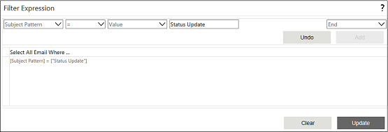

No
Wait for SMS: Filter Expression
You can set the filter expression to filter the incoming SMS in this property window. To open this window, click the button for the 'Filter Expression' property.

The window has a set of drop downs at the top to select the different parameters required to build the filter expression. You can also find related buttons next to the drop downs.
- The Attribute drop down - You can select the attribute to be used to filter the SMS, e.g., "Subject Pattern", in this drop down.
- The Operator drop down - You can select the operator for the expression here. E.g., "="
- The Value type drop down - You can select the type of value to assign to the attribute in the expression. You can specify Variable, Content, Value, or XMLVariables here.
- The Value text box/drop down - You can specify the actual value to assign to the attribute. The control displayed depends on the option selected in the preceding drop down. If you had selected "Value", it will display a text box here. You can enter a discrete value in this box to complete the expression. If you had selected "Variable", "Content", or "XMLVariables" instead, there will be a drop down instead of the field. This drop down will have the variable collection or content collection or XMLVariables collection from which you can select an appropriate option.
- The Logical operator drop down - You can select logical operators from this drop down to build compound expressions. The options available are "End", "And", "Or", "')' And", and "')' Or". You can select "End" to complete the expression.
- Add - You can click this button to add the new expression to the text area.
- Undo - You can click this button to remove a condition you have added to the expression.
At the bottom of the window you will find the following buttons:
- Clear - You can click this button to clear the expression shown in the text area. This is useful when you want to build a new expression.
- Update - You can click this button to save the expression that has been added to the text area.